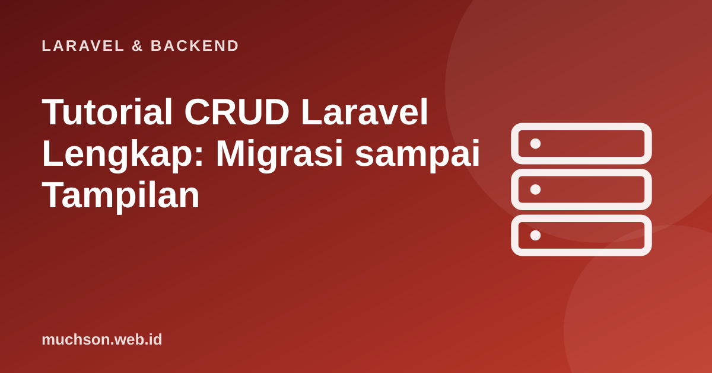

Beranda › Artikel › Laravel & Backend
Laravel & BackendTutorial CRUD Laravel Lengkap: Migrasi sampai Tampilan
CRUD (Create, Read, Update, Delete) adalah tulang punggung hampir semua aplikasi bisnis. Menguasai satu CRUD yang rapi di Laravel berarti Anda sudah dapat membangun sebagian besar halaman administrasi. Tutorial ini membangunnya dari awal dengan praktik yang benar: validasi, pesan, paginasi, pencarian, dan keamanan dasar.
Sebaiknya sudah paham: dasar Laravel (routing, controller, Blade), Eloquent dasar

Tujuan belajar
Setelah membaca dan mencoba materi ini, Anda mampu:
- membangun CRUD lengkap untuk satu entitas (produk)
- memakai resource controller dan route model binding
- memisahkan validasi dengan Form Request
- menampilkan daftar dengan pencarian dan paginasi
- menerapkan pesan flash, konfirmasi hapus, dan perlindungan CSRF
Tentang contoh kode
Kode PHP/Laravel di artikel ini mengikuti dokumentasi Laravel (versi 11 dan seterusnya, PHP 8.2 atau lebih baru). Bagian "cara kerja di balik layar" dijalankan sungguhan dengan Python atau JavaScript agar konsepnya dapat dibuktikan.
Gambaran: tujuh rute standar
| Aksi | Metode & URL | Method controller | Nama rute |
|---|---|---|---|
| Daftar | GET /produk | index | produk.index |
| Form baru | GET /produk/create | create | produk.create |
| Simpan | POST /produk | store | produk.store |
| Detail | GET /produk/{produk} | show | produk.show |
| Form ubah | GET /produk/{produk}/edit | edit | produk.edit |
| Perbarui | PUT/PATCH /produk/{produk} | update | produk.update |
| Hapus | DELETE /produk/{produk} | destroy | produk.destroy |
Langkah 1: model, migrasi, dan factory
php artisan make:model Produk -mfr # model + migrasi + factory + resource controller
php artisan make:request ProdukRequest<?php
// database/migrations/xxxx_create_produk_table.php (bagian up)
Schema::create('produk', function (Blueprint $table) {
$table->id();
$table->string('kode', 20)->unique();
$table->string('nama');
$table->text('deskripsi')->nullable();
$table->unsignedInteger('harga');
$table->unsignedInteger('stok')->default(0);
$table->timestamps();
$table->index('nama');
});
// app/Models/Produk.php
class Produk extends Model
{
use HasFactory;
protected $table = 'produk';
protected $fillable = ['kode', 'nama', 'deskripsi', 'harga', 'stok'];
}
// database/factories/ProdukFactory.php
public function definition(): array
{
return [
'kode' => strtoupper(fake()->unique()->bothify('PRD-###??')),
'nama' => fake()->words(2, true),
'harga' => fake()->numberBetween(5, 300) * 1000,
'stok' => fake()->numberBetween(0, 100),
];
}
// database/seeders/DatabaseSeeder.php -> Produk::factory()->count(40)->create();
// php artisan migrate --seedLangkah 2: rute dan Form Request
<?php
// routes/web.php
Route::resource('produk', ProdukController::class);
// app/Http/Requests/ProdukRequest.php (dipakai untuk store DAN update)
class ProdukRequest extends FormRequest
{
public function authorize(): bool { return true; }
public function rules(): array
{
$produk = $this->route('produk'); // null saat membuat baru
return [
'kode' => ['required', 'string', 'max:20', Rule::unique('produk', 'kode')->ignore($produk)],
'nama' => ['required', 'string', 'min:3', 'max:255'],
'deskripsi' => ['nullable', 'string', 'max:2000'],
'harga' => ['required', 'integer', 'min:0'],
'stok' => ['required', 'integer', 'min:0'],
];
}
public function messages(): array
{
return ['kode.unique' => 'Kode produk sudah dipakai.'];
}
}Langkah 3: controller
<?php
class ProdukController extends Controller
{
public function index(Request $request)
{
$produk = Produk::query()
->when($request->filled('q'), fn ($q) => $q->where(function ($q) use ($request) {
$kata = '%' . $request->string('q') . '%';
$q->where('nama', 'like', $kata)->orWhere('kode', 'like', $kata);
}))
->latest()
->paginate(10)
->withQueryString(); // pertahankan ?q= saat pindah halaman
return view('produk.index', compact('produk'));
}
public function create()
{
return view('produk.form', ['produk' => new Produk()]);
}
public function store(ProdukRequest $request)
{
Produk::create($request->validated());
return redirect()->route('produk.index')->with('sukses', 'Produk berhasil ditambahkan.');
}
public function show(Produk $produk)
{
return view('produk.show', compact('produk'));
}
public function edit(Produk $produk)
{
return view('produk.form', compact('produk'));
}
public function update(ProdukRequest $request, Produk $produk)
{
$produk->update($request->validated());
return redirect()->route('produk.index')->with('sukses', 'Produk berhasil diperbarui.');
}
public function destroy(Produk $produk)
{
$produk->delete();
return redirect()->route('produk.index')->with('sukses', 'Produk dihapus.');
}
}Langkah 4: tampilan
{{-- resources/views/produk/index.blade.php --}}
@extends('layouts.app')
@section('isi')
<h1>Produk</h1>
@if (session('sukses'))
<p role="status" class="info">{{ session('sukses') }}</p>
@endif
<form method="GET" action="{{ route('produk.index') }}">
<input type="search" name="q" value="{{ request('q') }}" placeholder="Cari nama atau kode" aria-label="Cari produk">
<button>Cari</button>
<a href="{{ route('produk.create') }}">Tambah produk</a>
</form>
<table>
<thead><tr><th>Kode</th><th>Nama</th><th>Harga</th><th>Stok</th><th>Aksi</th></tr></thead>
<tbody>
@forelse ($produk as $p)
<tr>
<td>{{ $p->kode }}</td>
<td><a href="{{ route('produk.show', $p) }}">{{ $p->nama }}</a></td>
<td>Rp{{ number_format($p->harga, 0, ',', '.') }}</td>
<td>{{ $p->stok }}</td>
<td>
<a href="{{ route('produk.edit', $p) }}">Ubah</a>
<form method="POST" action="{{ route('produk.destroy', $p) }}" style="display:inline"
onsubmit="return confirm('Hapus {{ $p->nama }}?')">
@csrf @method('DELETE')
<button type="submit">Hapus</button>
</form>
</td>
</tr>
@empty
<tr><td colspan="5">Tidak ada produk.</td></tr>
@endforelse
</tbody>
</table>
{{ $produk->links() }}
@endsection{{-- resources/views/produk/form.blade.php: dipakai bersama untuk tambah dan ubah --}}
@extends('layouts.app')
@section('isi')
<h1>{{ $produk->exists ? 'Ubah' : 'Tambah' }} Produk</h1>
<form method="POST" action="{{ $produk->exists ? route('produk.update', $produk) : route('produk.store') }}">
@csrf
@if ($produk->exists) @method('PUT') @endif
@foreach (['kode' => 'Kode', 'nama' => 'Nama', 'harga' => 'Harga', 'stok' => 'Stok'] as $kolom => $label)
<div>
<label for="{{ $kolom }}">{{ $label }}</label>
<input id="{{ $kolom }}" name="{{ $kolom }}" value="{{ old($kolom, $produk->$kolom) }}"
@error($kolom) aria-invalid="true" @enderror>
@error($kolom) <p role="alert">{{ $message }}</p> @enderror
</div>
@endforeach
<label for="deskripsi">Deskripsi</label>
<textarea id="deskripsi" name="deskripsi">{{ old('deskripsi', $produk->deskripsi) }}</textarea>
<button type="submit">Simpan</button>
</form>
@endsectionMengapa urutan pencarian seperti itu: peragaan paginasi dan pencarian
import sqlite3
db = sqlite3.connect(":memory:")
db.execute("CREATE TABLE produk (id INTEGER PRIMARY KEY, kode TEXT, nama TEXT)")
db.executemany("INSERT INTO produk (kode, nama) VALUES (?, ?)",
[(f"PRD-{i:03d}", n) for i, n in enumerate(["Kopi Gayo", "Kopi Toraja", "Teh Hijau", "Teh Hitam", "Gula Aren", "Kopi Arabika"] * 8, 1)])
def halaman(q, nomor, per=10):
kata = f"%{q}%"
total = db.execute("SELECT COUNT(*) FROM produk WHERE nama LIKE ? OR kode LIKE ?", (kata, kata)).fetchone()[0]
baris = db.execute("SELECT kode, nama FROM produk WHERE nama LIKE ? OR kode LIKE ? ORDER BY id DESC LIMIT ? OFFSET ?",
(kata, kata, per, (nomor - 1) * per)).fetchall()
return total, baris
for q, n in [("", 1), ("Kopi", 1), ("Kopi", 3), ("xyz", 1)]:
total, baris = halaman(q, n)
print(f"q={q!r:7} halaman {n}: total {total:>2}, tampil {len(baris)} baris", [b[0] for b in baris[:3]])q='' halaman 1: total 48, tampil 10 baris ['PRD-048', 'PRD-047', 'PRD-046']
q='Kopi' halaman 1: total 24, tampil 10 baris ['PRD-048', 'PRD-044', 'PRD-043']
q='Kopi' halaman 3: total 24, tampil 4 baris ['PRD-007', 'PRD-006', 'PRD-002']
q='xyz' halaman 1: total 0, tampil 0 baris []
Tes cepat untuk CRUD
<?php
public function test_crud_produk(): void
{
$user = User::factory()->create();
$this->actingAs($user);
$this->post('/produk', ['kode' => 'PRD-1', 'nama' => 'Kopi', 'harga' => 20000, 'stok' => 5])
->assertRedirect('/produk');
$this->assertDatabaseHas('produk', ['kode' => 'PRD-1']);
$produk = Produk::first();
$this->put('/produk/' . $produk->id, ['kode' => 'PRD-1', 'nama' => 'Kopi Gayo', 'harga' => 25000, 'stok' => 5]);
$this->assertDatabaseHas('produk', ['nama' => 'Kopi Gayo']);
$this->delete('/produk/' . $produk->id);
$this->assertDatabaseMissing('produk', ['id' => $produk->id]);
}Latihan mandiriCoba kerjakan dulu sebelum membuka jawaban.
1. Tambahkan kolom "kategori" ke CRUD dengan pilihan dropdown dari tabel kategori.
Migrasi kategori_id (foreignId), relasi belongsTo, aturan exists:kategori,id, dan
2. Mengapa tombol hapus sebaiknya memakai konfirmasi?
Hapus tidak dapat dibatalkan; konfirmasi (atau soft delete) mencegah kesalahan klik.
3. Bagaimana menambah urutan berdasarkan harga lewat query string dengan aman?
Ambil ?urut hanya bila termasuk daftar kolom yang diizinkan, lalu orderBy kolom itu.
4. Apa gunanya route model binding pada show(Produk $produk)?
Laravel mengambil model dari id di URL dan memberi 404 otomatis bila tidak ada.
Ringkasan
- CRUD = tujuh rute resource, satu controller, satu Form Request, dan dua view (daftar dan form).
- Gunakan validated(), redirect dengan pesan flash, DELETE dengan @csrf dan @method.
- Paginasi dan pencarian: withQueryString dan pengelompokan kondisi OR.
- Lengkapi dengan otorisasi dan tes.
Tanya jawab
Apakah ada alat yang membuat CRUD otomatis?
Ya: Filament, Laravel Nova, dan Backpack membangun panel admin CRUD dengan cepat. Memahami CRUD manual tetap penting sebagai dasar.
Bagaimana dengan upload gambar produk?
Tambahkan input file, validasi image dan ukuran, simpan dengan store(), dan simpan path di kolom; hapus berkas lama saat diganti.
Kapan memakai soft delete?
Saat data harus dapat dipulihkan atau dibutuhkan untuk audit; gunakan trait SoftDeletes dan kolom deleted_at.
Referensi
- Laravel: Controllers (Resource Controllers)
- Laravel: Pagination
- Laravel: Form Request Validation
- Laravel Documentation